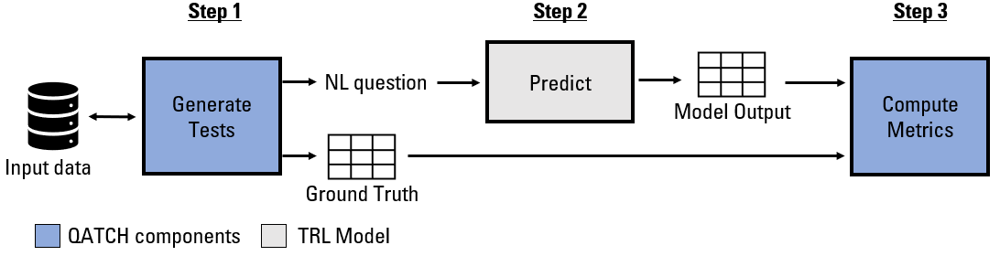
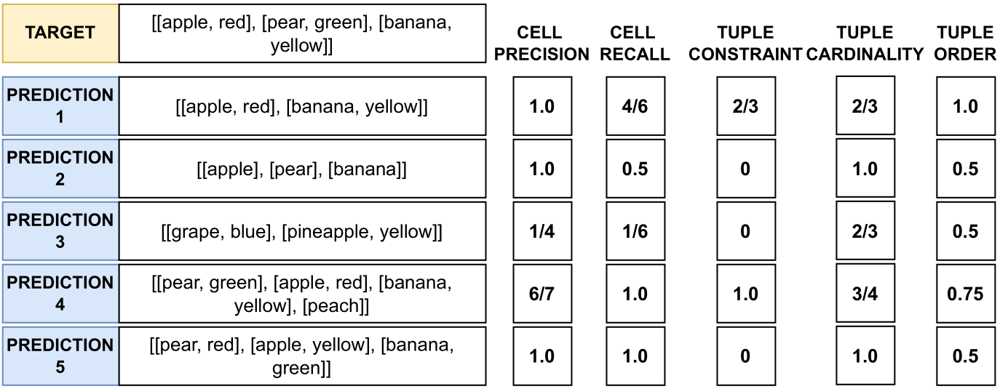
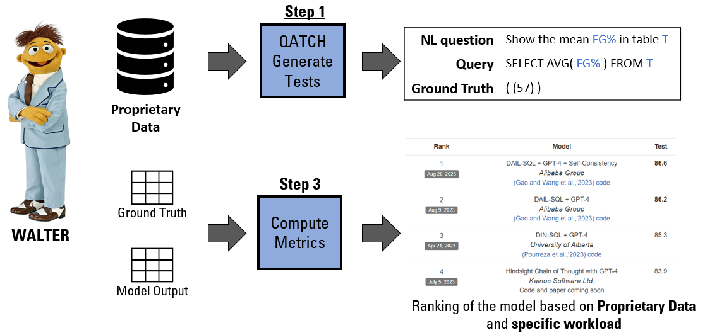

QATCH: Benchmarking SQL-centric tasks with Table Representation Learning Models on Your Data
This Python library is the official implementation of QATCH: Benchmarking SQL-centric tasks with Table Representation Learning Models on Your Data to appear in NeurIPS Dataset and Benchmark track 2023.
Overview
- What is QATCH? Query-Aided TRL Checklist (QATCH) is a toolbox to highlight TRL models’ strengths and weaknesses on prorietary tables for Question Answering (QA) and Semantic Parsing (SP).
- How does it work? Given a proprietary database as input, it generates a testing checklist for QA and SP.
- More specifically? A query generation algorithm crafts tests by means of the expressive power of SQL.
- Ok cool, that's it? To evaluate the model's predictions, we propose 5 new metrics intra and inter tuple.
- Where is processed the data? The data is processed locally. We do not store any data. If you use the ChatGPT wrapper the data is processed by OpenAI.

QATCH's automatically generates and evaluates test checklists on TRL models based on the three-step process depicted below:
-
QATCH-Generate. It generates a set of queries tailored to proprietary data. For each query it formulates both the SQL declaration, its free-text version, and the expected ground truth consisting of table instances. The SQL declaration expresses the logical complexity of the query and reflects the presence/absence of specific features peculiar to relational data model such as presence of missing values and duplicate values.
-
TRL Model Predictions. It processes the tests for various TRL models and tasks. The current toolbox version supports three Table Representation Learning (TRL) models for QA: TAPAS, TAPEX and Omnitab. In addition, two LLMs are implemented for QA and SP ChatGPT 3.5 (need the API key) and LLama2 (need the HuggingFace token).
-
QATCH-Evaluate. It evaluates the models outputs according to a set of cross-task performance metrics.

Who should use QATCH?
QATCH is designed to create "behavioral testing" checklist for QA and SP tasks. The checklist is used to understand in which case the models fail when processing proprietary data.
In a corporate setting, there are at least three scenarios where a given TRL model needs to be evaluated against proprietary datasets:
- Comparison: Compare TRL models fine-tuned on private examples to see which one performs best.
- Validation: As crafting examples is expensive, verify when the quality meets the requirements.
- Maintenance: Fine-tuned models need to be re-calibrated to avoid data and conceptual shifting, continuous evaluation helps the identification of this issue.
But the usage of QATCH it is not limited to the TRL models. Indeed, we propose two scenarios where QATCH can be used with LLMs:
- LLM compatibility version: Compare different version of the same LLMs to see the best performing one.
- Prompt engineering: Analyse the best prompt definition based on the proprietary data.

License
This project is licensed under the terms of the Apache 2.0 license. For more details,
see the LICENSE file in this repository.